第 1 页：为什么广东不像一个省？
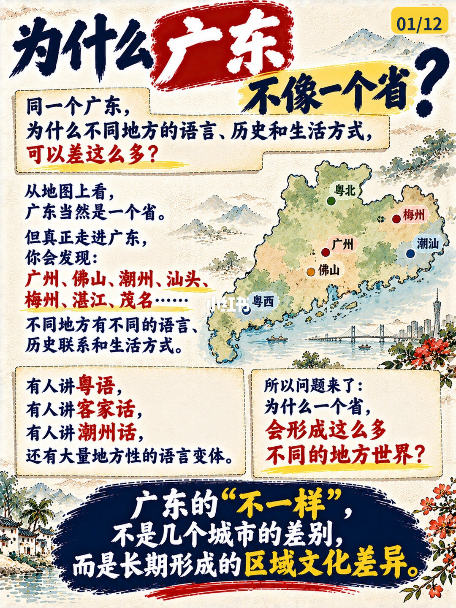
1/12同一省内广府/潮汕/客家等语言、历史、生活方式差异显著；「不一样」是长期形成的区域文化差。
Opening: one province, many local worlds—language, history, lifestyle.
第 2 页：理解广东不能只看广州
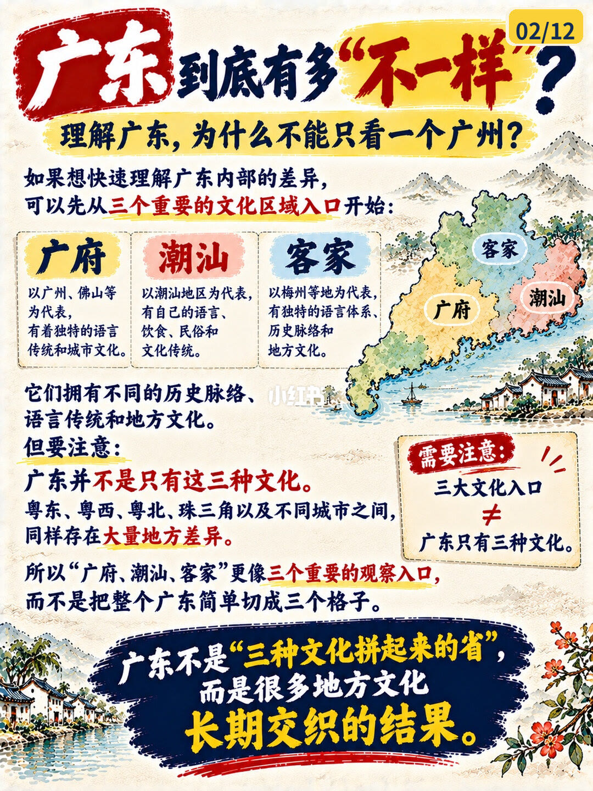
2/12三大文化入口：广府、潮汕、客家；但粤东粤西粤北与珠三角内部仍有显著差异，≠只有三种文化。
Three cultural doors help, but Guangdong isn’t only three cultures.
第 3 页：广东人说的「广东话」不一样
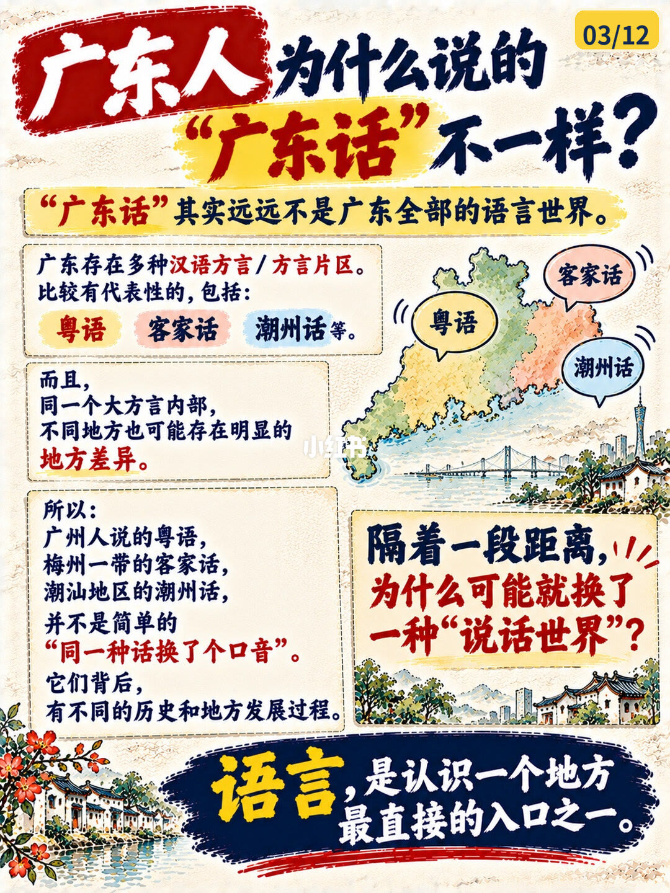
3/12粤语、客家话、潮州话是不同方言系统，不是同语不同腔；语言是认识地方的直接入口。
Cantonese, Hakka, Teochew are distinct systems—not mere accents.
第 4 页：语言为何这么复杂？
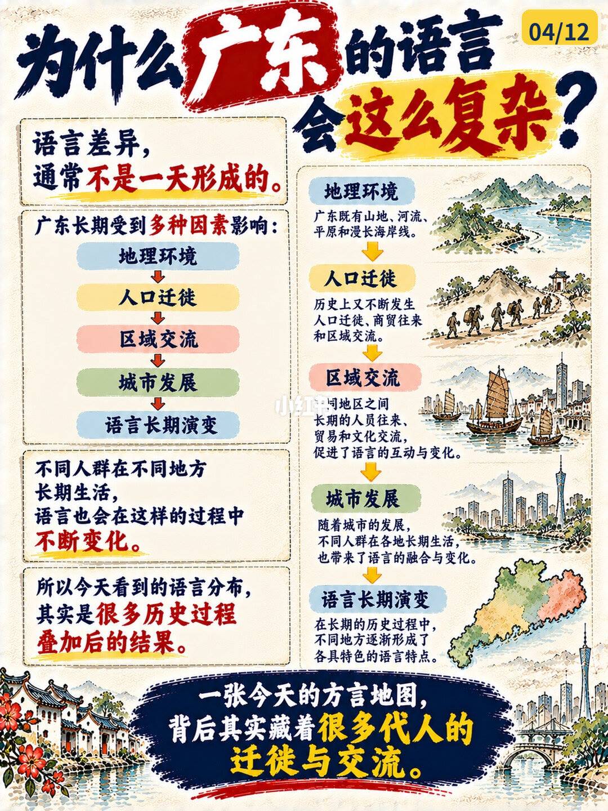
4/12地理环境→人口迁徙→区域交流→城市发展→长期演变，多层叠加才有今天的方言地图。
Complexity from geography, migration, exchange, cities, and long evolution.
第 5 页：广州为何成了「中心」？
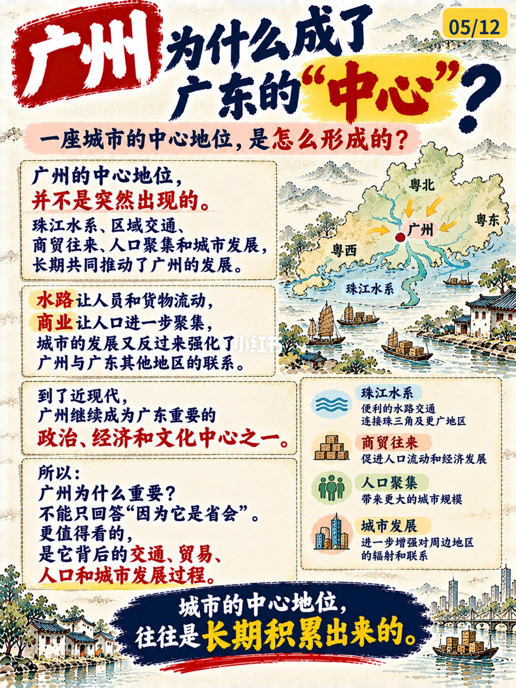
5/12珠江水系、商贸、人口聚集与城市发展长期积累；中心地位不是「因为是省会」一句话。
Guangzhou’s center status accumulated via Pearl River trade and urban growth.
第 6 页：广府≠广州文化
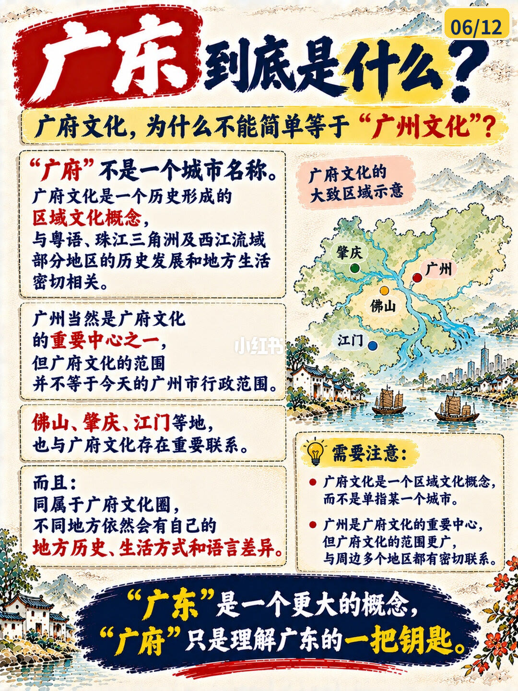
6/12广府是区域文化概念，覆盖珠三角西江流域；佛山肇庆江门等也在圈内，广州是枢纽而非边界。
Guangfu is a regional concept broader than Guangzhou city limits.
第 7 页：潮汕地方认同为何强？
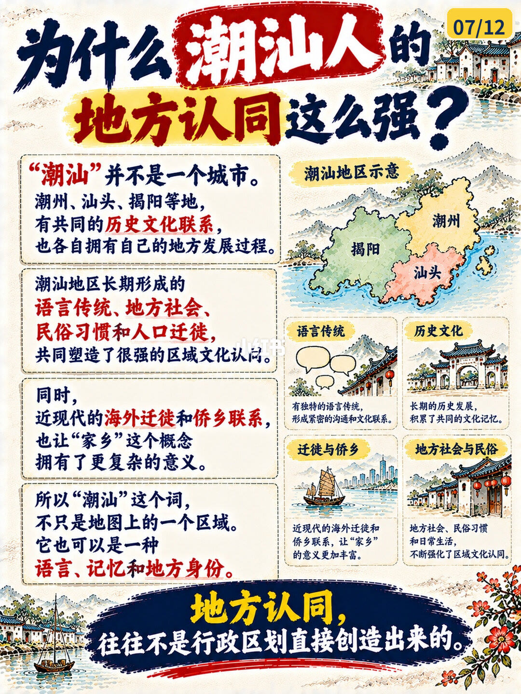
7/12潮州汕头揭阳共历史语言民俗；海外移民把「家乡」拉长；认同常非行政区直接创造。
Chaoshan identity from language, customs, diaspora—not admin borders alone.
第 8 页：广东为何还有「客家世界」？
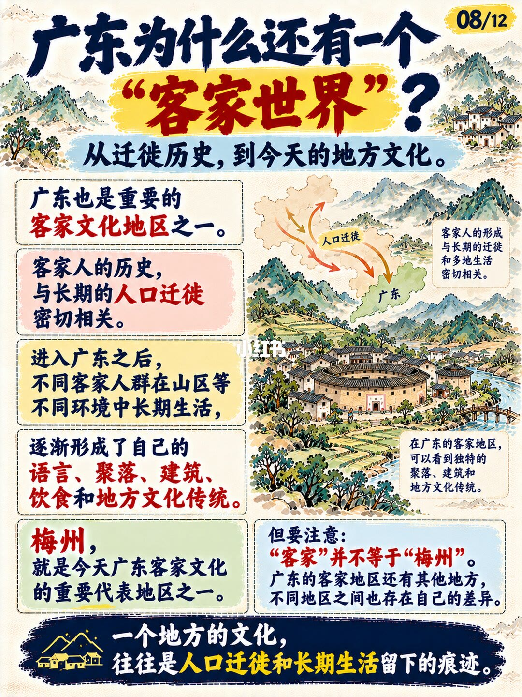
8/12长期迁徙入粤后在山地等环境形成语言聚落建筑饮食传统；梅州是代表但客家≠梅州。
Hakka world from migration and mountain living; Meizhou is a hub, not the whole.
第 9 页：越往不同方向越不一样
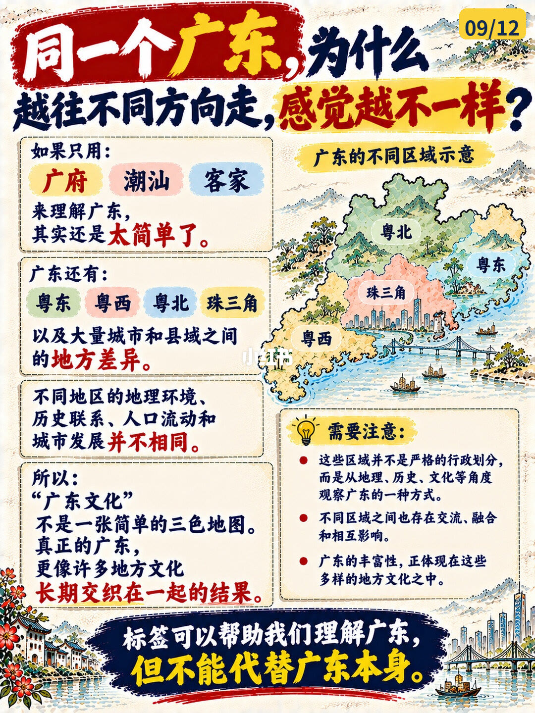
9/12仅用广府潮汕客家三色太简；粤东粤西粤北珠三角是观察轴，标签不能代替广东本身。
East/West/North/PRD axes matter; labels help but don’t replace the place.
第 10 页：一条珠江如何连出不同广东？
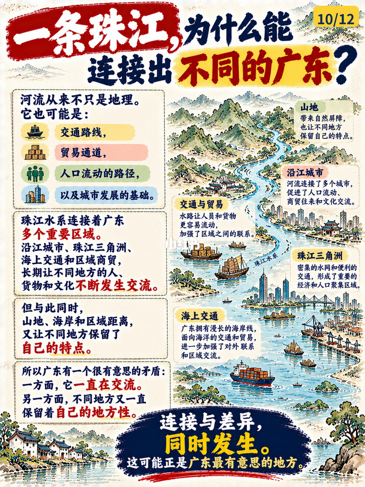
10/12江河连接交通贸易迁徙，山地海岸又保留地方性——连接与差异同时发生。
The Pearl River connects while mountains/coast keep locality—both at once.
第 11 页：所以广东到底是不是一个省？
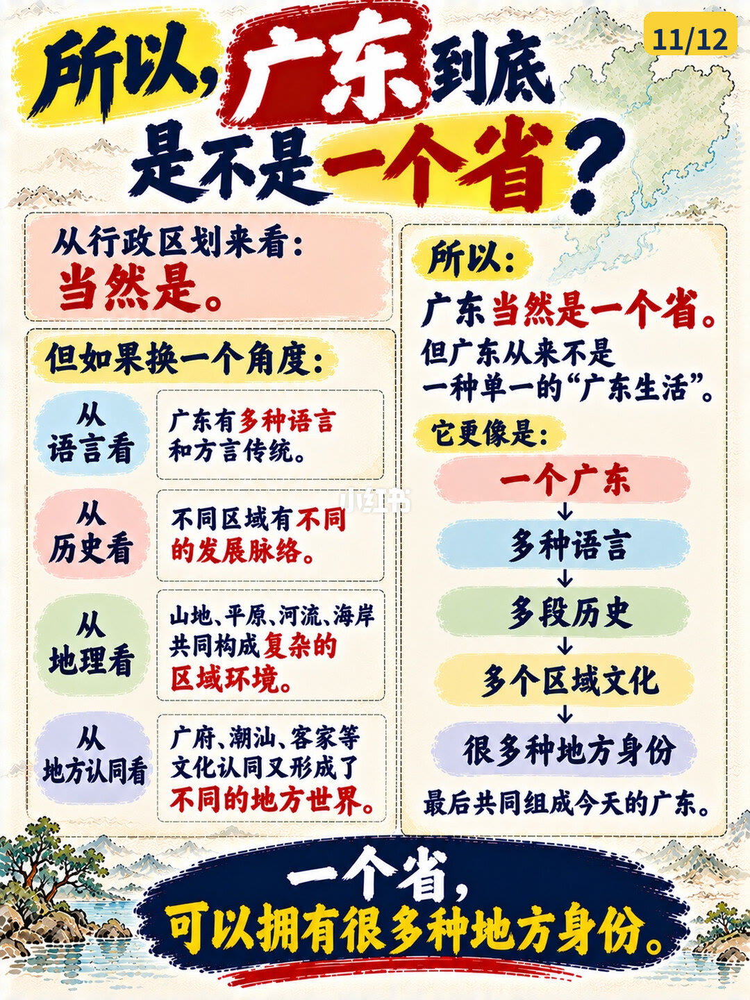
11/12行政区划当然是；语言/历史/地理/认同上却是多世界叠加的一个省。
Administratively yes; culturally many languages, histories, and identities.
第 12 页：你是广东哪里的？
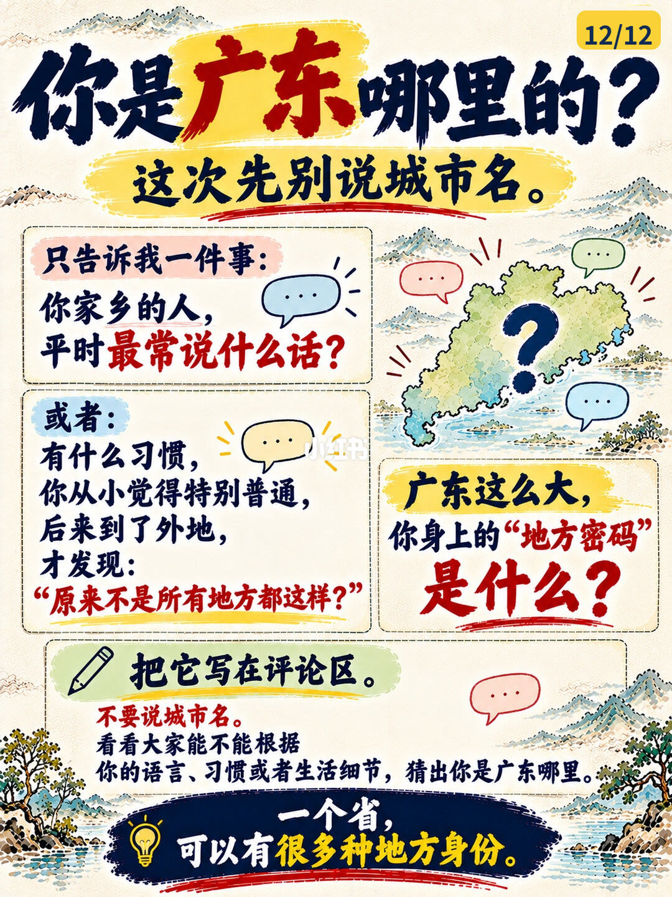
12/12评论区用不报城市名的语言或习惯作「地方密码」，让人猜籍贯。
Engagement: share a local speech/habit without naming the city.